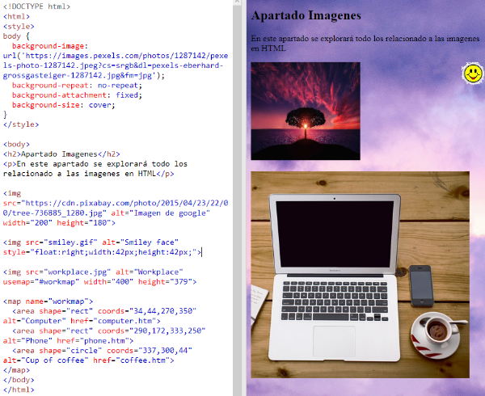

"Las imágenes pueden mejorar el diseño y la apariencia de una página web."
La "img" etiqueta HTML se utiliza para incrustar una imagen en una página web.
Técnicamente, las imágenes no se insertan en una página web; las imágenes están vinculadas a páginas web. La "img" etiqueta crea un espacio de espera
para la imagen de referencia.
La "img" etiqueta está vacía, solo contiene atributos y no tiene una etiqueta de cierre.
La "img" etiqueta tiene dos atributos obligatorios:
Con la información anterior se han hecho ejercicios con respecto a este apartado, por lo cual se presenta uno:
